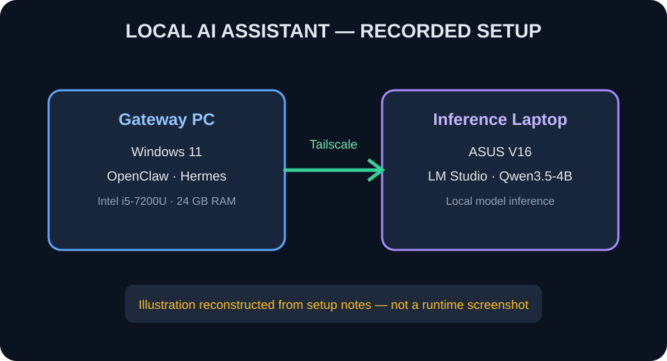
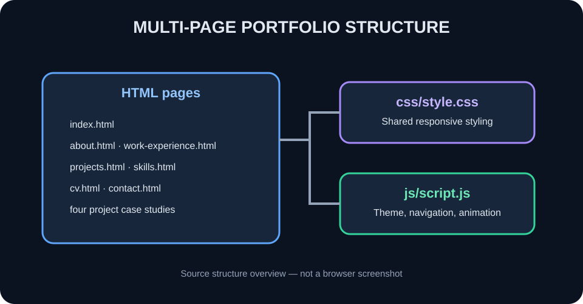

Project Portfolio
Examples of technical problem-solving, learning and product thinking, with each project’s current status made clear.
Wordle AI Solver
Developed search-based Wordle agents that rank candidate guesses using entropy, expected remaining candidates and minimax-style heuristics. Implemented duplicate-letter-aware feedback and evaluation/testing code.
View project details & evidenceLocal AI Assistant
Prototyping a local AI-assistant setup with LM Studio, Qwen3.5-4B, OpenClaw, Hermes and Tailscale. Investigated context-window constraints, inference performance and voice-interaction options; several integrations remain exploratory.
View project details & evidencePersonal Portfolio Website
Built this multi-page portfolio using HTML, CSS, JavaScript and Bootstrap. The original site includes responsive navigation, dark mode, scroll progress, animated page elements and interactive behaviour.
View project details & evidenceFravara — AI-powered Pickleball Concept
Founder-led product concept exploring an AI-enabled sports ecosystem focused on pickleball. Current work centres on user needs, problem definition, product scope and brand direction; the project remains at concept stage.
View project details & evidenceEvidence & Documentation
Open the detailed case studies to inspect source excerpts, evaluation data, architecture notes and the original concept artwork. Each item is labelled according to what the supplied material actually proves.

Wordle AI Solver
Reported A/C evaluation results, Python source excerpts and duplicate-letter test cases.
Inspect evidence
Local AI Assistant
Architecture illustration and implementation-status notes. Not a captured runtime screenshot.
Inspect evidence
Portfolio Website
Actual HTML, CSS and JavaScript excerpts for themes, responsive structure and scroll animations.
Inspect evidence
Fravara
Original pickleball concept artwork and concept-stage case study; not a working product prototype.
Inspect concept